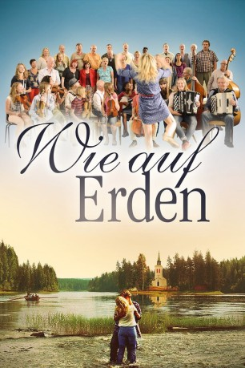
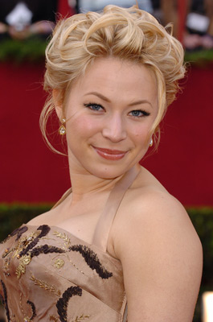

#8926 Wie auf Erden
 
 IMDB-Wertung: 4.7 / 10
IMDB-Wertung: 4.7 / 10  Metascore: 0
Metascore: 0 
Die Kirche von Ljusåker ist mal wieder leer. In seiner Verzweiflung greift Pastor Stig immer häufiger zum Hochprozentigen, bis ihm eine unorthodoxe Idee kommt: Die quirlige Sängerin Lena soll das Erbe ihrer großen Liebe, dem Stardirigenten Daniel, antreten: vor ein paar Monaten hat er den Chor von Ljusåker mit seiner Leidenschaft beflügelt. Durch ein fantastisches Jubiläumskonzert wäre eine volle Kirche garantiert. Kirchenbänke raus, Musik und Tanz hinein und Händels „Halleluja“ modern interpretiert: Mit ihren unkonventionellen Ideen bezaubert Lena zwar den Restaurator Axel, verwirrt jedoch die Dorfbewohner und bringt den Kirchenrat gegen sich auf. Doch die willensstarke junge Mutter tut alles, um ihre eigene Stimme zu finden und sich damit Gehör zu verschaffen.
Jahr: 2015
Dauer: 134 Minuten
FSK: 6
Land: Schweden Studio: EuroVideoTonspuren:
Untertitel: Deutsch,
Auflösung: 1080p (1920x808) Größe: 6727 MB
Genre: Drama, Musik, Komödie, Liebe
Regisseur: Kay Pollak
Drehbuch: Carin Pollak
Soundtrack:
Darsteller:
- Björn Bengtsson als Jonas
- Eric Ericson als Verner
 Björn Granath als Bjelke
Björn Granath als Bjelke-  Frida Hallgren als Lena
- Thomas Hanzon als Bruno
- Lennart Jähkel als Arne
 Jakob Oftebro als Axel
Jakob Oftebro als Axel- André Sjöberg als Tore
- Axelle Axell als Florence
- Niklas Falk als Stig
- Ylva Lööf als Siv
- Astrid Froede Othelius als Marie
- Catherine Parment als
- Lasse Pettersson als Erik
- Mikael Rahm als Holmfrid
- Maria Sid als Helena
Datei: X:\2-Dilogie(N-Z)\Wie im Himmel - Wie auf Erden\Wie auf Erden (2015, FSK6, 1920x808).mkv seit 08.05.2018
Festplatte: HD Collection-2(A-Z)-3(A-M)
 Alle Filme aus Gruppe '2-Dilogie(N-Z)\Wie im Himmel - Wie auf Erden'
Alle Filme aus Gruppe '2-Dilogie(N-Z)\Wie im Himmel - Wie auf Erden'